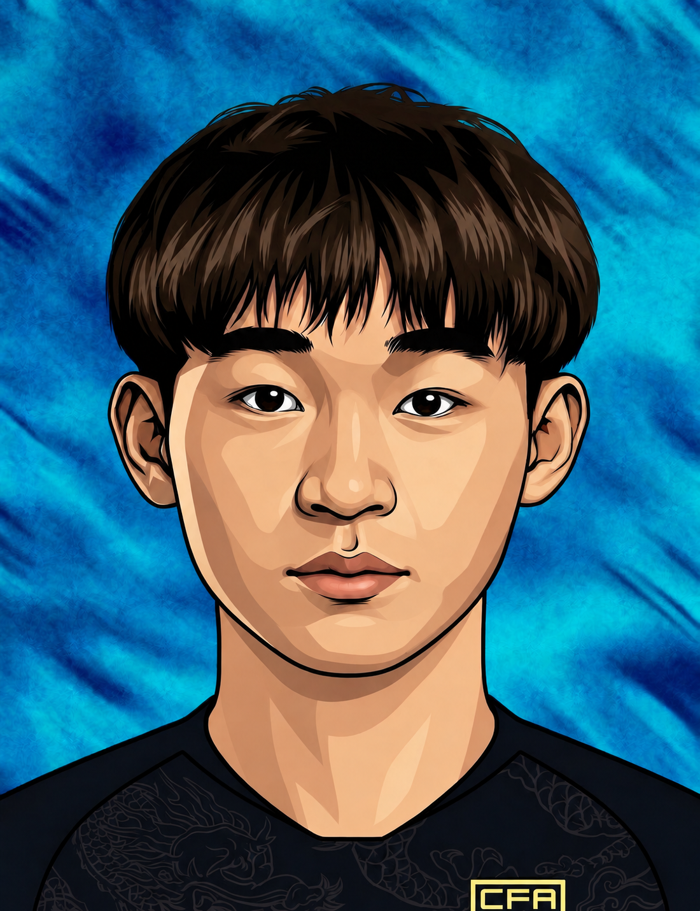
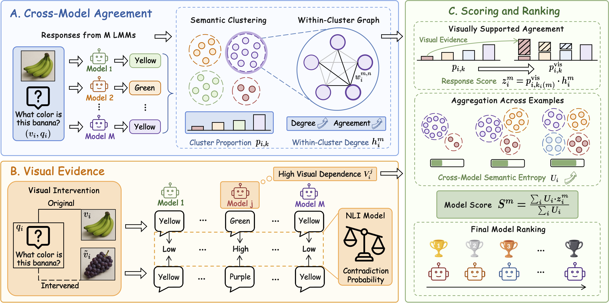
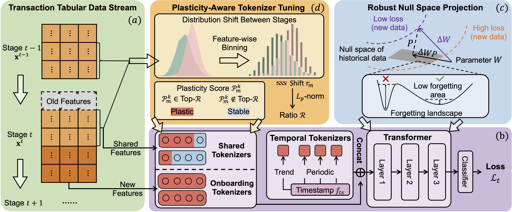
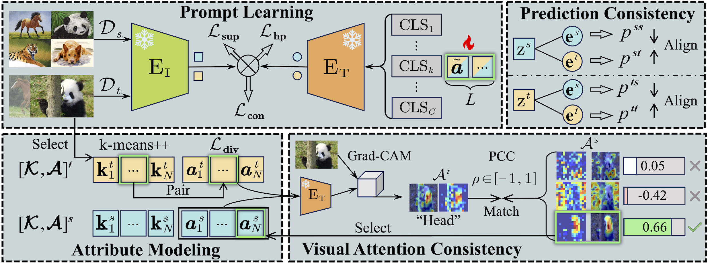

Kerun Mi (米科润)
Great Bay University |
 |

Biography
Hello! I am a research assistant at Great Bay University, working with Prof. Renchunzi Xie. I received my master's degree from Nanjing University of Science and Technology in 2026, under the supervision of Prof. Chen Gong, and my bachelor's degree from Xiangtan University in 2023.
My research interests include domain adaptation, unsupervised model evaluation, and continual learning, with an emphasis on multimodal scenarios.
Feel free to contact me if you are interested in discussing or collaborating with me.
Publications (* denotes equal contribution.)
| [Manuscript] | |
|
 |
Ranking Black-Box LMMs Without Labels via Visually Grounded Cross-Model Agreement Kerun Mi, Weijian Deng, Renchunzi Xie Under review. |
|
 |
Continual Fraud Detection with Dynamic Feature Space Wenshui Luo*, Kerun Mi*, Chuang Zhang, Yong Tang, Boqun Ma, Tengfei Liu, Chen Gong Under review. |
| [Conference] | |
|
 |
Cross-Domain Attribute Alignment with CLIP: A Rehearsal-Free Approach for Class-Incremental Unsupervised Domain Adaptation Kerun Mi, Guoliang Kang, Guangyu Li, Lin Zhao, Tao Zhou, Chen Gong The 33rd ACM International Conference on Multimedia (ACM MM), 2025, pp. 7883–7892. Oral Presentation |
Experience
|
Great Bay University, China Research Assistant Advisor: Prof. Renchunzi Xie May 2026 – Present |
Education
|
Nanjing University of Science and Technology, China Master's degree in Computer Science and Technology Advisor: Prof. Chen Gong Sep. 2023 – Apr. 2026 |
|
|
Xiangtan University, China Bachelor's degree in Information and Computing Science Sep. 2019 – Jun. 2023 |
Selected Projects
[Patent Application]
Training Method and Apparatus for a Risk Identification Model. Kerun Mi, Boqun Ma, Chuang Zhang, Wenshui Luo, Yong Tang, Chen Gong, Jiahuan Yan, Tengfei Liu, Weiqiang Wang. Chinese Invention Patent Application No. CN202610156098. Under examination.
[Software Copyright]
A PyTorch Optimizer Based on the Nonlinear Conjugate Gradient Method. Yangjin Cheng, Kerun Mi, Jiaoli
Wang, Dingyi Luo. Chinese Software Copyright Registration No. 2023SR0442637.

Honors & Awards
| [06/2023] Outstanding Graduate (municipal and university honors). |
| [04/2022] 3rd Prize — National College Student Market Survey and Analysis Competition. |
| [09/2021] 2nd Prize — Contemporary Undergraduate Mathematical Contest in Modeling (provincial level). |
Professional Services
[Conference Reviewer]
International Conference on Multimedia Modeling (MMM) 2027
IEEE International Conference on Multimedia and Expo (ICME) 2026
IEEE Transactions on Image Processing (TIP)
IEEE Transactions on Circuits and Systems for Video Technology (TCSVT)
Pattern Recognition (PR)
Chinese Journal of Electronics (CJE)
Last updated: Sep. 2026 · © 2026 Kerun Mi